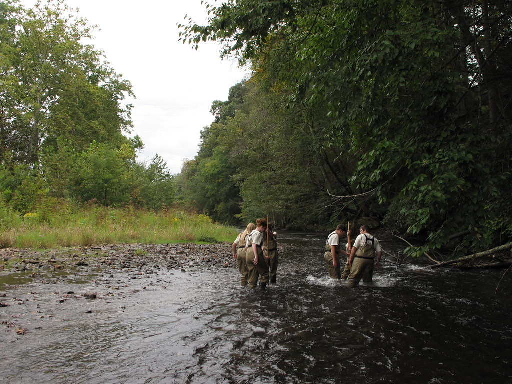

Galería
Así se vive un día en LNEC
Por privacidad, no publicamos fotografías de nuestros estudiantes ni de nuestras instalaciones. Las imágenes de esta página son fotografías de stock, ilustrativas y referenciales — no corresponden a nuestra escuela ni a niños o niñas reales de nuestra comunidad.





Créditos de fotografías (todo el sitio)
- "Children Walking on Trail" — vastateparksstaff, CC BY 2.0 (Flickr)
- "Mazatzal on Fossil Creek" — Coconino NF Photography, dominio público (Flickr)
- "Blocks" — Hey Paul, CC BY 2.0 (Flickr)
- "A small child developing analytical skills..." — Ivan Radic, CC BY 2.0 (Flickr)
- "#Sharing: Friday night pizza" — Dai Lygad, CC BY 2.0 (Flickr)
- "Cutting Fruit" — Direct Media, CC0 (StockSnap)
- "Volunteer Garden" — F. D. Richards, CC BY-SA 2.0 (Flickr)
- "RHS Wisley - Caring Candid - Sharing a Joke" — Gareth1953 All Right Now, CC BY 2.0 (Flickr)
- "woman-reading-book-outside" — Spirit-Fire, CC BY 2.0 (Flickr)
- "Close hands playing guitar" — Rawpixel, CC0
- "Hands" — John-Morgan, CC BY 2.0 (Flickr)
- "Crafts Hobby" — Freestocks.org, CC0 (StockSnap)
- "Camp Fire" — AstroSamantha, CC BY 2.0 (Flickr)
- "A pair of student groups collect stream insects" — USFWS/Southeast, CC BY 2.0 (Flickr)
- Ilustración de Fiestas Patrias: original de este sitio